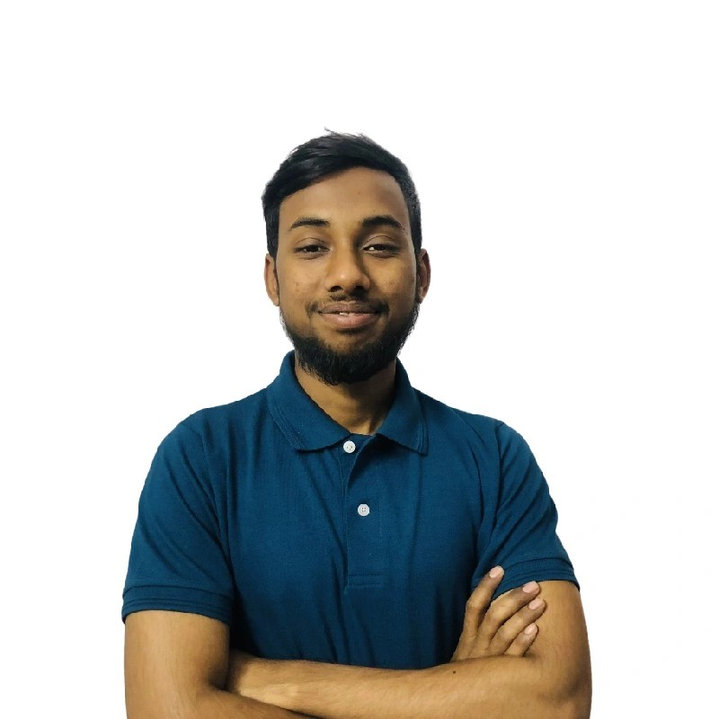

Copyright © 2024 All right reserves | This website is made with ♥ by Rafey
About Me
👋 Hello, I'm Affan Minhas! 🎓 I'm currently a final-year student pursuing a degree in Computer System Engineering at NED University. 🏫 My academic journey has provided me with a strong foundation in computer science and engineering principles, which I'm eager to apply to real-world challenges. 📱 Outside of my academic journey, I'm passionate about mobile app development. 💻 Currently, I'm proud to be a part of the talented team at Blocship, where I work as a Flutter Mobile App Developer. 🚀From designing sleek user interfaces to crafting robust backend systems, I thrive on the end-to-end process of bringing innovative ideas to life. 💡 My skills extend beyond coding; I've also gained valuable experience in Flutter Flow, a no-code platform. 🌐 Using this platform, I've been able to bring app ideas to life and oversee the entire development process, from concept to completion. 📲 🏆 Achieving the goal of creating apps from scratch and seeing them thrive in the real world has been an incredibly fulfilling experience for me. 🌟 🔍 I'm not just scratching the surface; I deeply understand the intricacies of Flutter Flow and leverage its capabilities to build innovative and user-friendly applications. 💪 🤝 Let's connect! Whether you want to discuss exciting opportunities, share insights, or simply have a chat about the world of app development, I'm always open to connecting with fellow professionals and enthusiasts in the field.